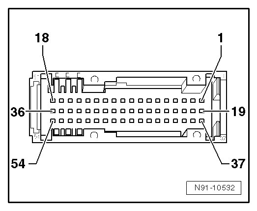

Connector Views
Multi-Pin Connector on Transceiver, Assignment

1. Voltage supply terminal 30, positive
2. Voltage supply, terminal 31, negative
3. Telephone ON
4. not used
5. not used
6. not used
7. not used
8. LF audio signal, output, positive
9. LF audio signal, output, negative
10. Shielding, terminal 31
11. Microphone input signal, positive
12. Microphone input signal, negative
13. not used
14. not used
15. Bus K-lead
16. Mute
17. CAN bus High
18. CAN bus Low
19. not used
20. not used
21. not used
22. not used
23. not used
24. not used
25. not used
26. not used
27. not used
28. not used
29. not used
30. not used
31. not used
32. not used
33. not used
34. not used
35. not used
36. not used
37. switched positive, terminal 30, for charging telephone battery
38. not used
39. Terminal 31, negative
40. not used
41. Mobile telephone interface, terminal 30
42. Microphone output signal, positive
43. Microphone output signal, negative
44. Shielding, terminal 31
45. LF audio signal, input, positive
46. LF audio signal, input, negative
47. Activation wire, communication to telephone cradle
48. not used
49. Serial transmission TX, communication to telephone cradle, positive
50. Serial transmission TX, communication to telephone cradle, negative
51. Serial transmission RX, communication to telephone cradle, positive
52. Serial transmission RX, communication to telephone cradle, negative
53. not used
54. not used